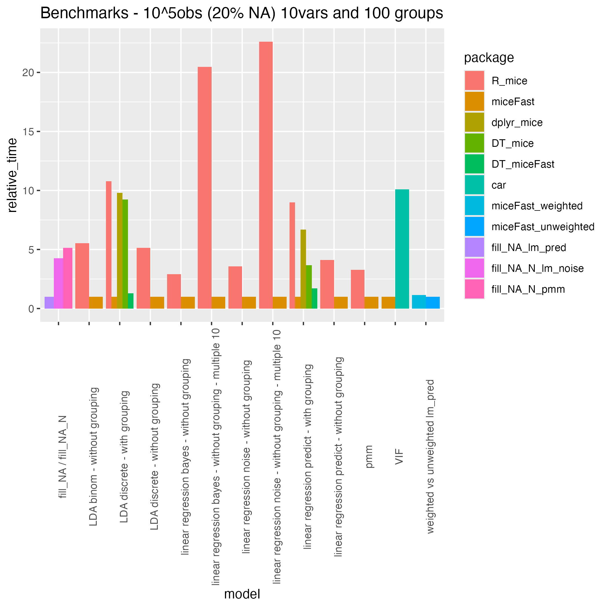

Author: Maciej Nasinski
Check the miceFast website for more details


Overview
miceFast provides fast methods for imputing missing data, leveraging an object-oriented programming paradigm and optimized linear algebra routines.
The package includes convenient helper functions compatible with data.table, dplyr, and other popular R packages.
Major speed improvements occur when:
- Using a grouping variable, where the data is automatically sorted by group, significantly reducing computation time. - Performing multiple imputations, by evaluating the underlying quantitative model only once for multiple draws. - Running Predictive Mean Matching (PMM), thanks to presorting and binary search.
For performance details, see performance_validity.R in the extdata folder.
Vignettes:
Multiple Imputation Workflow
mice implements the full MI pipeline (impute, analyze, pool). miceFast focuses on the computationally expensive part — fitting the imputation models — and is typically ~10× faster than mice for the imputation step alone (see benchmarks). Two usage modes:
MI with Rubin’s rules — call
fill_NA()with a stochastic model (lm_bayes,lm_noise, orldawith a randomridge) in a loop to create m completed datasets, thenpool()the fitted models.Single-dataset averaging —
fill_NA_N()returns the mean of k draws per missing value. Handy for exploration, but not for Rubin’s rules (between-imputation variance is lost).
See the MI vignette for worked examples.
Installation
You can install miceFast from CRAN:
install.packages("miceFast")Or install the development version from GitHub:
# install.packages("devtools")
devtools::install_github("polkas/miceFast")Quick Example
dplyr
library(miceFast)
library(dplyr)
set.seed(1234)
data(air_miss)
# Visualize the NA structure
upset_NA(air_miss, 6)
# Model-based single imputation
air_miss %>%
mutate(Ozone_imp = fill_NA(
x = ., model = "lm_bayes",
posit_y = "Ozone", posit_x = c("Solar.R", "Wind", "Temp")
))
# Proper MI: impute m times, fit models, pool with Rubin's rules
completed <- lapply(1:5, function(i) {
air_miss %>%
mutate(Ozone_imp = fill_NA(
x = ., model = "lm_bayes",
posit_y = "Ozone", posit_x = c("Solar.R", "Wind", "Temp")
))
})
fits <- lapply(completed, function(d) lm(Ozone_imp ~ Wind + Temp, data = d))
pool(fits)
#> Pooled results from 5 imputed datasets
#> Rubin's rules with Barnard-Rubin df adjustment
#>
#> term estimate std.error statistic df p.value
#> (Intercept) -62.771 23.9022 -2.626 46.95 1.162e-02
#> Wind -3.087 0.6857 -4.502 37.24 6.420e-05
#> Temp 1.736 0.2498 6.951 58.54 3.400e-09data.table
library(miceFast)
library(data.table)
set.seed(1234)
data(air_miss)
setDT(air_miss)
# Single imputation
air_miss[, Ozone_imp := fill_NA(
x = .SD, model = "lm_bayes",
posit_y = "Ozone", posit_x = c("Solar.R", "Wind", "Temp")
)]
# Grouped imputation — fits a separate model per group
air_miss[, Solar_R_imp := fill_NA(
x = .SD, model = "lm_bayes",
posit_y = "Solar.R", posit_x = c("Wind", "Temp", "Intercept")
), by = .(groups)]Naive imputation (baseline only)
# Quick baseline — biased, does not account for relationships between variables
naive_fill_NA(air_miss)See the Introduction vignette for weights, the OOP interface, log-transformations, and more.
Key Features
-
Object-Oriented Interface via
miceFastobjects (Rcpp modules). -
Convenient Helpers:
-
fill_NA(): Single imputation (lda,lm_pred,lm_bayes,lm_noise).
-
fill_NA_N(): Multiple imputations (pmm,lm_bayes,lm_noise).
-
pool(): Pool multiply imputed results using Rubin’s rules.
-
VIF(): Variance Inflation Factor calculations.
-
naive_fill_NA(): Automatic naive imputations.
-
compare_imp(): Compare original vs. imputed values.
-
upset_NA(): Visualize NA structure using UpSetR.
-
Quick Reference Table:
| Function | Description |
|---|---|
new(miceFast) |
Creates an OOP instance with numerous imputation methods (see the vignette). |
fill_NA() |
Single imputation: lda, lm_pred, lm_bayes, lm_noise. |
fill_NA_N() |
Averaged multiple imputations (mean of N draws): pmm, lm_bayes, lm_noise. |
pool() |
Pools estimates from m imputed datasets using Rubin’s rules. Works with any model that has coef() and vcov(). |
VIF() |
Computes Variance Inflation Factors. |
naive_fill_NA() |
Performs automatic, naive imputations. |
compare_imp() |
Compares imputations vs. original data. |
upset_NA() |
Visualizes NA structure using an UpSet plot. |
Practical Advice
-
Little missing data + MCAR? Consider using
complete.cases()— listwise deletion is unbiased under MCAR and may be sufficient when the fraction of incomplete rows is small. -
For publication, always run a sensitivity analysis: compare MI results against base methods (
complete.cases(), mean imputation) and across different imputation models (lm_bayes,lm_noise,pmm). Vary the number of imputations. If conclusions change, investigate why. Report the imputation model, m, and any assumptions about the missing-data mechanism. - See the MI vignette for details on MCAR/MAR/MNAR mechanisms and a practical checklist.
Performance Highlights
Median timings on 100k rows, 10 variables, 100 groups (R 4.4.3, macOS M3 Pro, optimized BLAS/LAPACK):
Imputation quality (SSE) is comparable to mice across all models.

Full benchmark script: inst/extdata/performance_validity.R.